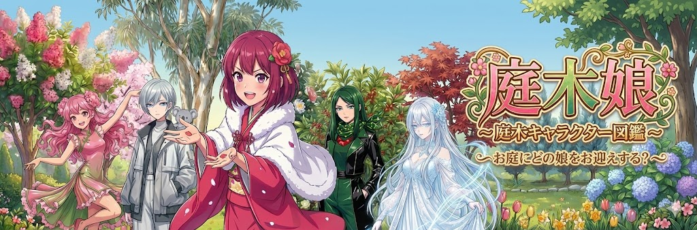
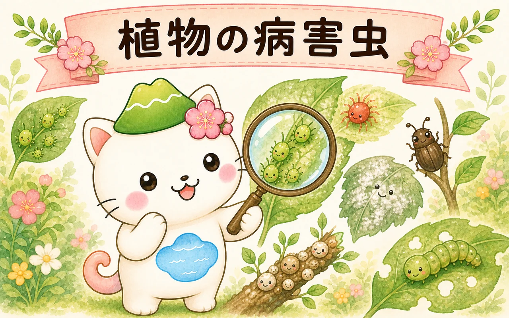
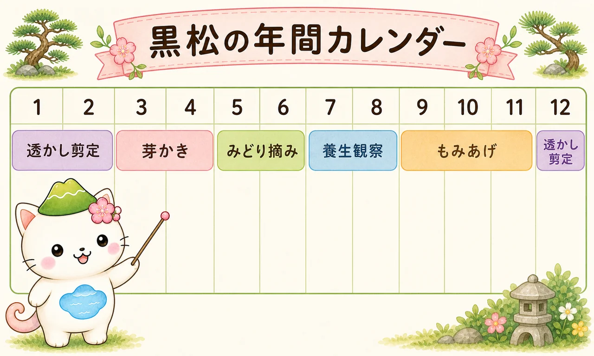
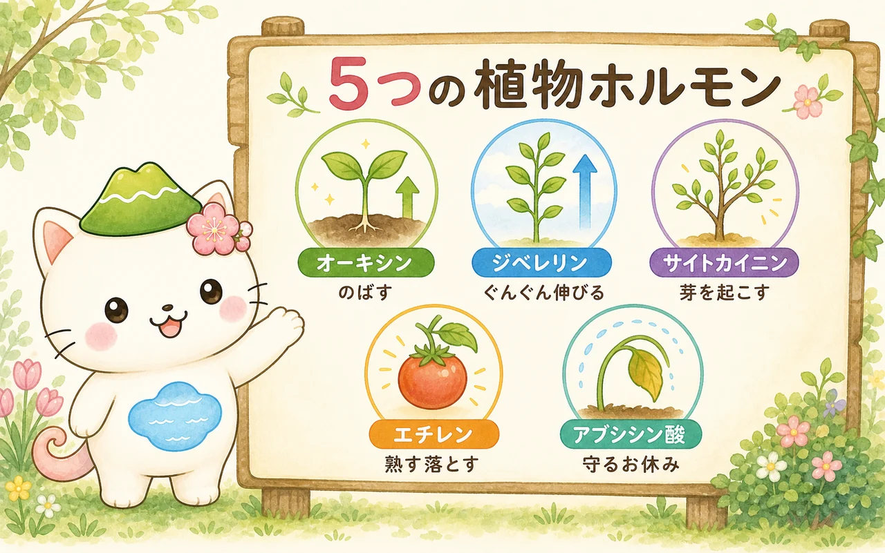

植物のことを、
やさしく、順番に。
植木・家庭菜園・庭づくりの「なぜ？」を、専門知識がなくても上から読み進めるだけでわかるように整理する、小さな植物サイトです。むずかしい言葉は、ねこのはるにゃさんがとなりでかみくだいてくれます。

記事を読む
トップページから各記事へ進めます
庭木キャラ図鑑
身近な庭木をひとりひとりキャラクターにして紹介する図鑑。アオキからワビスケまで、全134種を五十音順に。姿と短いひとことから、気になる木との出会いを。
図鑑をひらく →
植物の病害虫の種類と対策
アブラムシ・ハダニ・うどんこ病・黒星病など、家庭の植木・菜園・庭でよく出会う代表的な病害虫を一覧で整理。それぞれの特徴・かわいいイラスト・予防と駆除の方法を、個別ページでやさしく解説します。
はるにゃさんと読む →
黒松の剪定と季節の管理
春の芽かき・初夏のみどり摘みから、秋のもみあげ、冬の透かし剪定（忌み枝の見分け方）、さらに水・肥料・病害虫の管理まで。黒松の1年を季節順に詳しく案内します。
はるにゃさんと読む →
植物ホルモンと剪定
木はなぜ「切った場所」で次の伸び方が変わるの？ 5つの植物ホルモンの役割から、果樹や庭木の剪定のコツまで、図解つきで上から順にやさしくたどります。
はるにゃさんと読む →
案内役・はるにゃさん
榛名山（はるなさん）のあたたかな雰囲気をモチーフにした、ねこのキャラクター。頭の榛名富士のぼうしと、おなかの榛名湖が目印です。このサイトでは、専門用語をかみくだく案内役として、各記事の図解やメモにいつも登場します。「むずかしそう」を「なるほど」に変えるのが、はるにゃさんの役目です。